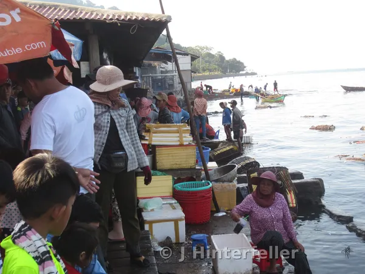
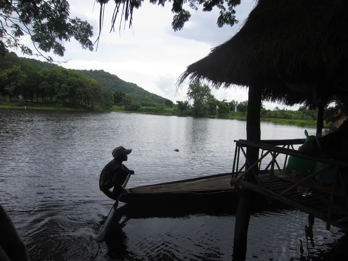
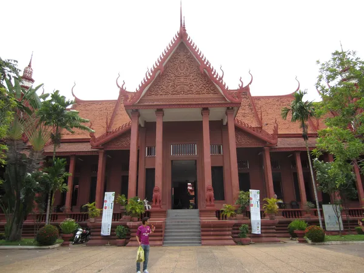
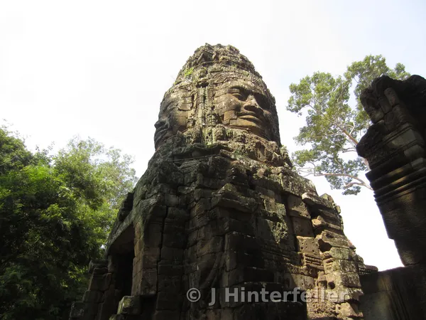
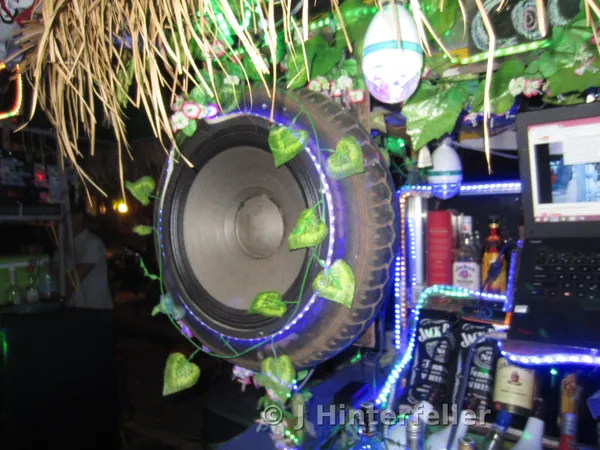

Kep
Fishing Village
This fishing village is a main supplier of fresh fish for the entire country
{kind=link}

Kep
Continued →
This fishing village is a main supplier of fresh fish for the entire country

Beautiful architecture and amazing bas reliefs
Three days is not enough
PASTE YOUR ARTICLE TEXT HERE

“Can I have a bite?” Sophea asked Rithi.
He broke off half of his sticky rice and gave it to his big sister.
“We sure found some nice lotus today. I think grandma will have a good day selling at the temple.”
“Yeah, today is a lucky day” Rithi smiled. His sister always made him feel good.
Sophea popped out a few green seeds from the lotus pod. She tossed them into her mouth and handed the rest to Rithi.
At night, they slept with their grandmother on a palm-covered platform with a bamboo slat floor. The Channy family owned it and three more. During the day, the Channys served food for visitors to the Khmer ruins and the nearby Buddhist temple.
“Do you want to go swing?” Rithi asked. “You can be princess Tilaka.”
She grinned. “Let’s go.”
They ran to the shore of the pond in the shadow of Phnom Banan.
Rithi jumped onto the pirogue and held his hand out for his sister. She sat on the wooden floor facing him.
“Rom Yol, Captain!”
Rithi squatted on the cross board of the bow and paddled. He felt proud to be the captain. After all, he was the man of the family now. He was nine years old. The protector. The guide.
It stood alone. The giant tree towered out of the high water, its arm stretched horizontally, showing its strength without fatigue. Two ropes hung down, and a wooden board seat swayed a meter above the waterline.
Princess Tilaka climbed on and swung. She watched the reflection of the mountain as Rithi’s paddle cut through the forest-green water, moving him away from the landing zone.
“Higher! Higher!” he cheered.
She swung higher and higher, and with a final pump, she launched herself off into the sky and landed in a refreshing splash. She doggy-paddled to the boat. Rithi rowed over and stopped the swing with his paddle.
She used the bow and the swing seat to pull herself aboard.
“Your turn,” she said.
Rithi handed her the paddle and jumped onto the swing. He stood, using his arms and his whole body-back and forth into a rhythm. He swung so high he thought he might fly off like an egret. He jumped forward and somersaulted into the water.
“Wooh!”
They rowed back to shore.
“Rithi,” Mr. Channy beckoned.
Sophea tied the boat to the post of the picnic shelter where they slept-the closest one to the kitchen.
Rithi ran over.
“Rithi, I heard you this morning,” Mr. Channy said excitedly. “It’s going to be a lucky day, yes?”
“Yeah.” He answered in a half whisper, half excited yell. He mimicked Mr. Channy’s tone.
“You’re right! Chacham-the whispers say there is a barang here this morning. They saw him walking up the steps to the temple.”
“Wow!”
“Yeah. Here is what you do…” Mr. Channy leaned in.
“Okay.”
They high-fived and Rithi went to his sister, who was lazing in a hammock between two palm trees.
“Get in the boat.”
They rowed to the opposite corner of the pond, close to the ancient stone staircase under the watch of the seven-headed nagas. They waited and watched up the stairs in anticipation.
“Is there really a foreigner?” Rithi asked a vendor.
“Yes, I saw him already. He went up. He has two or three families with him, many boys and girls your age too,” she replied. “It’s a lucky day.”
They made their rounds, talking to everyone.
There was a commotion on the old bridge. Selfies were being taken by the naga rails that supported the bridge.
“Auntie, Auntie!” They ran up and whispered in the lady’s ear.
She smiled, nodded, and shooed them out of the picture.
Rithi and Sophea jumped into the boat. “Auntie, Auntie!” he pointed across the pond. The auntie gave them a thumbs-up and a nod.
After a while, two tuk-tuks pulled up in front of Channy’s picnic huts, and a herd of hungry people piled out. Cheerful banter filled the air.
The barang looked around with peace in his heart. Children surrounded him, barefoot and excited. They rarely saw white-skinned people. He rarely saw life this real, this simple, this beautiful. Mr. and Mrs. Channy put up a feast-eight or nine courses at least.
After the bellies were full, Rithi rowed over on his pirogue and called to Auntie. This was his moment to share his expertise. He did not understand the English she spoke.
“He wants to give you a tour,” she explained.
Of course-adventure was his nature. The barang climbed aboard and sat opposite Rithi. Rithi rowed and rowed, giving the full tour, until they arrived at the giant tree swing.
The fat old man used all his might to climb onto the swing. He admired the reflection, and his mind drifted to his eight-year-old self.
He remembered hustling in secondhand clothes. A small tourist-town street kid. Crisp summer mornings in Deadwood, SD, tour buses full of Canadians, Japanese, and retirees from everywhere stopped, while on their way to Yellowstone. Before they arrived, he scrubbed the beer glasses in a stale-beer-smelling basement pub for a dollar a morning. In the afternoon, his sleight-of-hand tricks entertained unsuspecting travelers-trading a dime for a quarter. And the week the carnival came-that was when he really put the hustle on. He’d convince a midway game stall to hire him. His cut was usually around a hundred dollars for the week. Those carnies liked the novelty.
Now, here, he reflected on a swing, living his best life. He saw himself in the boy.
He wanted to launch into the water-higher and higher he pumped. Then he thought about climbing his ass back out. Then he remembered Lake Chapala, when locals warned about a parasite that crawls up into… that was enough. He stopped swinging.
They returned to the party.
“Don’t tell Mr. Channy.” The tip for the captain was more than the food bill.
A lucky day.

One of the main museums to visit in Cambodia.
PASTE YOUR ARTICLE TEXT HERE
Facing the cardinal directions

This young entrepreneur converted his 125cc Honda into a party to go

{kind=link}
{kind=link}
{kind=link}
{kind=link}
{kind=link}
{kind=link}